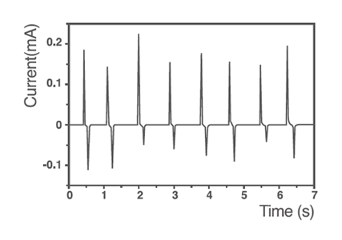
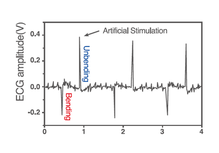

Report by Subjects
Report by Subjects
KAIST RESEARCH ACHIEVEMENTS
Self-powered cardiac pacemaker enabled by
flexible single crystalline
PMN-PT energy harvester
Department of materials science and engineering
Keon Jae Lee
Summary
Flexible piezoelectric harvester reported in this research, could be utilized to charge batteries or directly stimulate living heart by generating electric energy from tiny movement of human organs. Consequently, medical accidents and medical cost could be decreased, and economic development could be made by opened new market.
R&D Report
Artificial cardiac pacemaker is an implantable medical device used to normalize abnormal heart rate by stimulating the cardiac nerves. However, the repetitive surgeries highly demand for timely replacement of the pacemakers due to their limited lifespan of batteries. The problem can be resolved by directly recharging battery inside human body or adopting self-powered heart stimulation, and thus minimizing medical and economic burdens for patients. In this work, it is experimentally described how flexible single crystal PMN-PT thin film on a thin plastic substrate can be utilized as a high-performance self-powered energy harvester by slight bending motions for artificial cardiac pacemaker.




The energy harvesting device generated one of the highest short-circuit current of 0.22mA and open-circuit voltage of 8.2V, which were enough to meet the high standard for cardiac nerve stimulation. This flexible PMN-PT thin film nanogenerator applied not only to charge batteries/turn on 120 LEDs, but also to render artificial pacemaking without external power sources.
This result could be utilized to relieve economic and medical burdens for patients by increasing replacement cycle of batteries of cardiac pacemakers. Furthermore, for clinical purposes, the current achievement will benefit the development of self-powered cardiac pacemakers as well as prevent heart attacks via the additional real-time diagnosis of heart arrhythmia.
Research results
ㆍSelected as the cover article of Advanced Materials, a well-known SCI Journal for material science.
ㆍMore than 20 media coverage in Korea(including KBS, MBC, YTN) and over the world.
Reference material
ㆍAttached file: Information and publicity material for 'Self-powered cardiac pacemaker'
ㆍSCI paper: G.-T. Hwang, et al. Self-powered cardiac pacemaker enabled by flexible single crystalline PMN-PT Piezoelectric Energy Harvester. Advanced Materials, 2014.
Research finance
ㆍBasic Science Research Program(grant code:
NRF-2012R1A2A1A03010415) and Center for Integrated Smart Sensors as Global Frontier Project(CISS-2012M3A6A6054187) funded by the Korea government(MSIP) through the National Research Foundation of Korea(NRF).